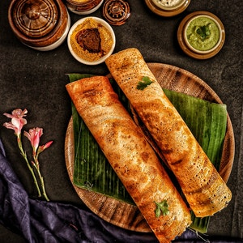

Home
Dosa

Description
In India, these thin, gluten-free, vegan dosa are often served for
breakfast.
Ingredients
- 1 ½ tablespoons uncooked white rice
- 1 tablespoon chana dal (split chickpeas)
- 1 tablespoon urad dal (black lentils)
- 1 tablespoon toor dal (pigeon peas)
- 1 ½ tablespoons minced red onion
-
½ teaspoon and ⅝ teaspoon dried hot red pepper flakes, or to taste
- 1 ½ leaves fresh curry
- asafoetida powder
- salt to taste
- 3 tablespoons water
- ⅜ teaspoon melted ghee, or as needed
Steps
-
Combine rice and all dals in a bowl of cold water; soak for 45 minutes.
Rinse several times and drain. Grind into a coarse meal.
-
Add onion, pepper flakes, curry leaves, asafoetida powder, and salt.
Slowly add water and stir until smooth. Let sit in a warm place until is
starts to ferment, at least 45 minutes, but ideally longer.
-
Grease a frying pan with melted ghee and set over medium heat. Ladle
some batter into the pan; spread it thinly and evenly into a circular
shape and drizzle with more ghee. Cook until golden brown, 5 to 8
minutes, flipping halfway through. Repeat to cook remaining adai dosa.
-
If you have a kitchen scale, use 170 grams rice, 90 grams each of chana
dal, urad dal, and toor dal, and 150 grams red onion.
Source:
All Recipes
Image Credit:
Saveurs Secretes | Pexels
Home